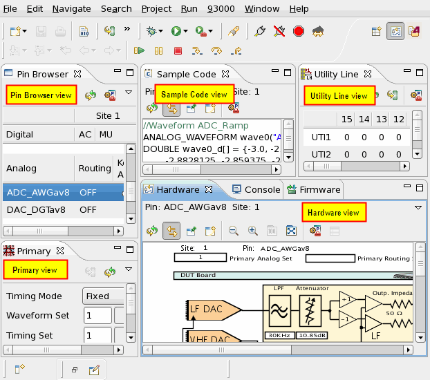

Hardware Perspective
The hardware perspective contains the views necessary for real-time debugging of your test setup. For example, if you need to verify the DC voltage at a particular pin on your DUT, the views within the Hardware Monitor Tool enable you to do so.
The hardware perspective is also sometimes referred to as hardware monitor tool.

For more information on available perspectives and how you can customize a perspective, see Perspectives.
The hardware perspective has four views with the following functions:
- Pin Browser view
For each pin of all sites this view shows: the connected or unconnected state of each pin, the type of PMU or ADC connected to each pin (digital pins), the voltage applied to DPS pins, the channel number and state information for each utility pin
- Primary view
This view shows primary set information (timing, levels etc.). The Primary view does not allow you to make changes to the primary sets.
- Hardware view
This view shows the digital channel parameters and relay settings, the state of the relays, the DPS parameters. Using this view you can performs voltage and current measurements.
- Utility Line view
This view displays read and write states of each utility pin. Using this view you can change the write state of each utility pin.
- Sample Code view
This view displays the complete test method code of the pin settings in the Hardware View. Use this view to copy test method code.
- Firmware view
You can execute firmware commands on this view.
Functional changes
- Introduced before SmarTest 6.3.2
- SmarTest 6.5.0: Added Sample Code view.
- SmarTest 6.5.2: The Firmware view is visible by default in the Setup perspectives.